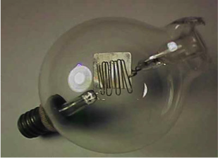
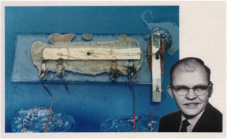
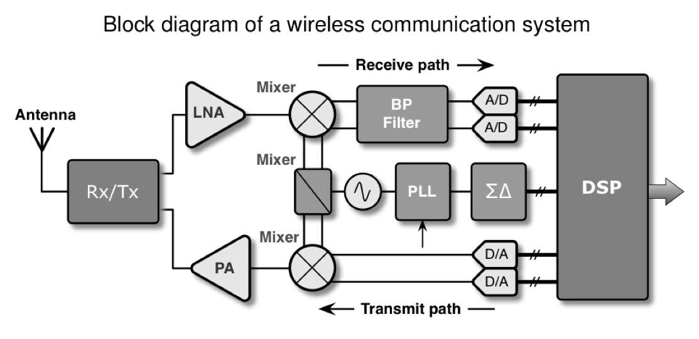
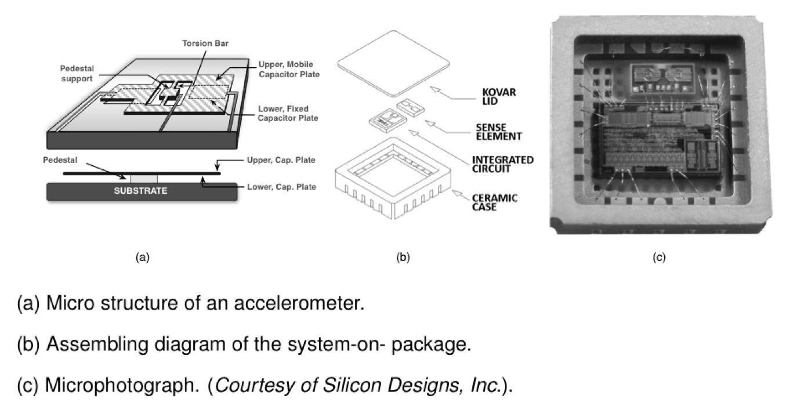

Einleitung#
### Wissenschaftliches Rechnen / Datenwissenschaft * [Python](https://www.anaconda.com/download/) * [R Project](https://www.r-project.org) * [Matlab](https://de.mathworks.com) * [Gnu Octave](https://www.gnu.org/software/octave/) * [Gnuplot](http://www.gnuplot.info) ([Gnuplotting](http://www.gnuplotting.org)) * [Command-line tools](http://jeroenjanssens.com/2013/09/19/seven-command-line-tools-for-data-science.html)Schaltungssimulation (SPICE)#
Betriebssystem (OS) - Werkzeuge (Tools)#
Code Editoren#
Schreibst Du noch oder TeXst Du schon?#
LaTeX Editoren#
IDE’s
Kollaborative Frameworks
Literaturverwaltung und LaTeX#
Schöne neue Welt#

Halbleiterherstellung (Infineon, Dresden)#
FinFET (Intel)#
TSMC Fab (Next Gen 7/5 nm)#
Es war einmal …#


Damals und heute#


Systemhierarchie#

Nutzen Sie Hierarchien zur Beschreibung komplexer Systeme
Teile und herrsche
Schnittstellen zur Aussenwelt#

Meeting mit einem System#

System in a Package (SiP)#

Sie werden unsere Experten#
Leistungsmerkmale.
Hintergrundwissen
Systemverständnis, Architektur, Herstellungsverfahren, Implementation
Unterbewusste Kompetenz
Abgespeicherte Erfahrungen aus Erfolgsgeschichten und Misserfolgen
Spezialwissen
Berufsspezifisches Wissen
Teamwork Haltung
Kommunikationsfähigkeit, Berichtswesen und technische Präsentation
Kreativität
Tool-Kenntnisse
Lernziele des Moduls#
Studierende können nach Abschluss des Moduls:
Elektrische Systeme mathematisch und graphisch im Zeit- und Frequenzbereich beschreiben
Netzwerkanalyse mit RLC-Gliedern
Spezielle Netzwerke, wie Messbrücken, Schwingkreise und ideale Transformatoren, dimensionieren.
Seminaristischer Unterricht:
Komplexe Wechselstromrechnung
Disktrete Bauelemente und ihre Modellierung (RLC)
Methodik der Netzwerkanalyse
Anwendungsbeispiele mit EDA-Werkzeugen und wissenschaftliches Rechnen (Scientific Computing)
Beschreibung elektrotechnischer Systeme (1)#
verschiedene Stufen der Vereinfachung
Felder / Wellen / Optik / HF-Technik.
Maxwell-Gleichungen
Beschreibung elektrotechnischer Systeme (2)#
bei lokaler Konzentration der Feldenergie \(\Rightarrow\) quasi-statische Näherung
Mikrowellentechnik / Leitungstechnik.
verteilte Schaltungen \(l,c,\rho\)
Kopplung, Laufzeit \(\tau = a/v\)
kleine Systeme mit \(a < < \lambda\) bzw. kurze Laufzeiten mit \(\tau < < T\)
Regelungstechnik / Impulstechnik.
Ersatzschaltungen
(Block-)Schaltbilder
Beschreibung elektrotechnischer Systeme (3)#
eingeschwungener Zustand
NF-Technik.
stationär-periodische Signale
Sinussignale
Energietechnik.
monofrequente Signale \(U = Z \cdot I\)
Beschreibung elektrotechnischer Systeme (4)#
Frequenz \(f \rightarrow 0\)
Gleichstromtechnik.
Ohmsches Gesetz \(U = R \cdot I\)
Konzentrierte Schaltelemente#
Stromdichte. $$
$$